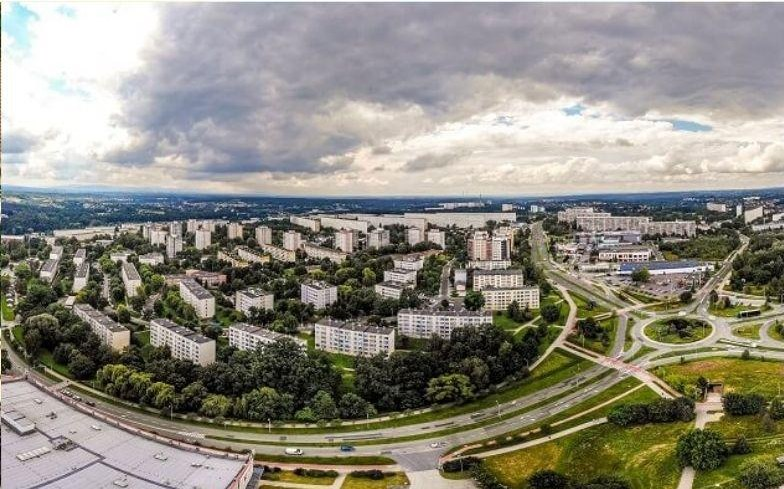
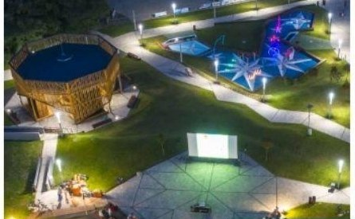
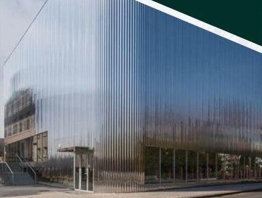
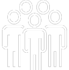
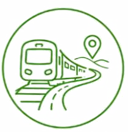
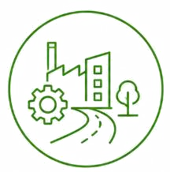
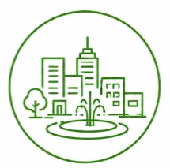
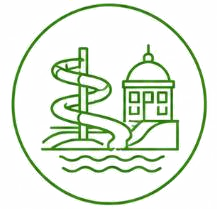
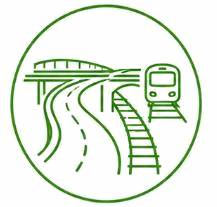

Jastrzębie-Zdrój 2035
Miasto o przemysłowych korzeniach, nowoczesne i przyjazne do życia. Poznaj diagnozę miasta i strategię jego rozwoju.

Diagnoza
Jak wygląda miasto dziś? Wskaźniki, wykresy i mapy – ludzie, gospodarka, przestrzeń, środowisko oraz głos mieszkańców.
Zobacz diagnozę →
Strategia
Dokąd zmierzamy? Wizja, misja, sześć celów, projekty kluczowe i kierunki działań do 2035 roku.
Przejdź do strategii →Jastrzębie-Zdrój w liczbach
Wybrane dane z diagnozy (stan na 2025 r.). Szczegóły i wykresy znajdziesz w diagnozie strategicznej.
- 80,5 tys.mieszkańców w 2025 r.o 11,3% mniej niż w 2014 r.
- 71,5 tys.prognozowana liczba mieszkańców w 2035 r.58,4 tys. w 2050 r.
- 46,4mediana wieku mieszkańców w 2025 r. (lata)
- 844podmiotów REGON na 10 tys. mieszkańców (2025)woj. śląskie: 1 305
- 27,3 tys.pracujących mieszkańców w 2025 r.
- 32,6 kmdróg rowerowych w 2024 r.29,6 km w 2020 r.
Misja i wizja
Misja
Transformacja Jastrzębia-Zdroju w nowoczesny i konkurencyjny ośrodek o przemysłowych korzeniach, oferujący stabilne miejsca pracy i zabezpieczenie potrzeb mieszkaniowych, a w konsekwencji wysoką jakość życia i perspektywy rozwoju dla mieszkańców.
Wizja 2035
W 2035 roku Jastrzębie-Zdrój jest nowoczesnym i konkurencyjnym ośrodkiem gospodarczym, który skutecznie wykorzystuje swoje przemysłowe, górnicze tradycje i buduje na nich markę miasta innowacyjnego. Wsparcie transformacji sektora przemysłowego i wzmocnienie przedsiębiorczości przyciągnęło inwestorów oraz przełożyło się na rozwój innowacyjnych form działalności gospodarczej, w szczególności wysokich technologii i…
Trzy sfery, sześć celów
Strategia porządkuje rozwój miasta w trzech sferach: gospodarczej, społecznej i przestrzennej.
Sfera gospodarcza
Dotyczy kondycji lokalnej gospodarki, rynku pracy, poziomu przedsiębiorczości i atrakcyjności inwestycyjnej miasta. Obejmuje aspekt konkurencyjności lokalnych…

Sfera społeczna
Obejmuje aspekt jakości życia w mieście, definiowanej przez pryzmat dostępności i jakości usług publicznych (edukacji, zdrowia, kultury itp.), więzi społecznych…
Transformacja gospodarcza Jastrzębia-Zdroju – innowacje oparte na przemysłowych tradycjach
2Gwarantowanie wysokiej jakości życia w Jastrzębiu-Zdroju – dobrostan, komfort i dostępność
3Wsparcie Jastrzębian na każdym etapie życia – silna wspólnota i szerokie perspektywy
4Rewitalizacja i aktywizacja - atrakcyjna, funkcjonalna i ożywiona przestrzeń miejska
5Podniesienie dostępności komunikacyjnej Jastrzębia-Zdroju - sprawny, zrównoważony i nowoczesny system transportowy miasta
6Adaptacja miasta do zmian klimatu – bezpieczeństwo i funkcjonowanie w zgodzie ze środowiskiem
Sześć projektów kluczowych
Przedsięwzięcia, które mają największy wpływ na przyszłość miasta.

Przywrócenie połączenia kolejowego wzmacniającego integrację przestrzenno-funkcjonalną Jastrzębia-Zdroju z regionem.

Rozwój oferty inwestycyjnej poprzez przygotowanie atrakcyjnych terenów inwestycyjnych, m.in. rozbudowa infrastruktury technicznej, w tym drogowej.

Wzmocnienie funkcji miejskich Jastrzębia-Zdroju poprzez zagospodarowanie strefy centrum.

Opracowanie projektu i realizacja inwestycji budowy Parku Wodnego.

Rozwój sieci transportowej miasta poprzez realizację kluczowych projektów drogowych zintegrowanych z projektowanymi liniami kolejowymi.
Rozwój budownictwa i tworzenie warunków do rozwoju mieszkalnictwa wielorodzinnego, w tym rozwój TBS, współpraca z deweloperami i nawiązywanie partnerstw publiczno-prywatnych na warunkach miasta.